Proceso paso a paso del armado de CPU
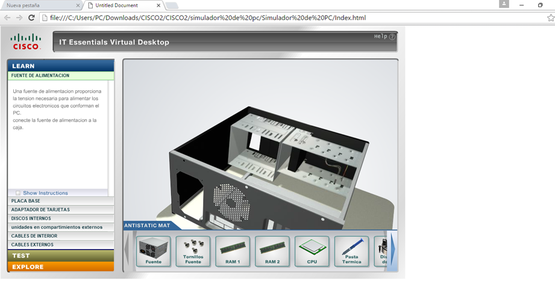
Colocación de fuente de poder, rotar el componente hasta que coincida con orientación de los cables
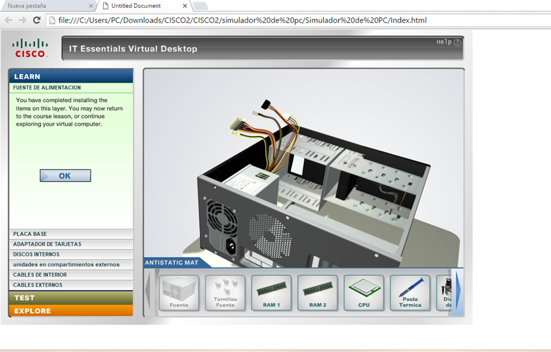
Asegurar la fuente colocando tornillos para evitar que quede mal
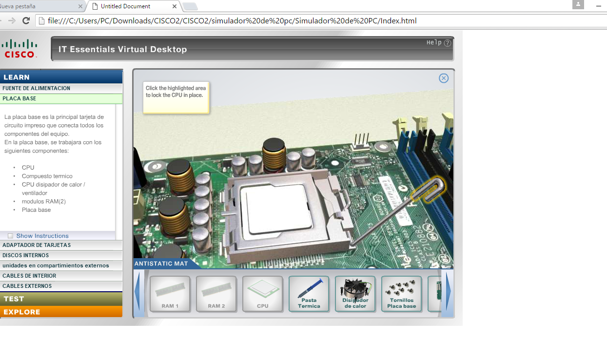
Insertar procesador asegurandose que esté alineado, bajar palanca de sujección
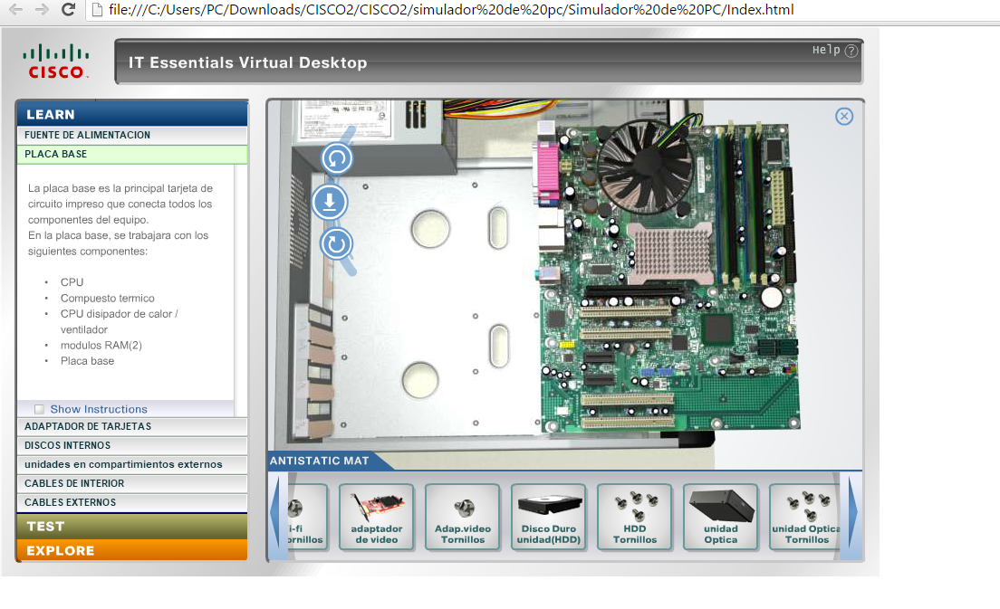
Aplicar una gota de compuesto térmico sobre el centro del cpu
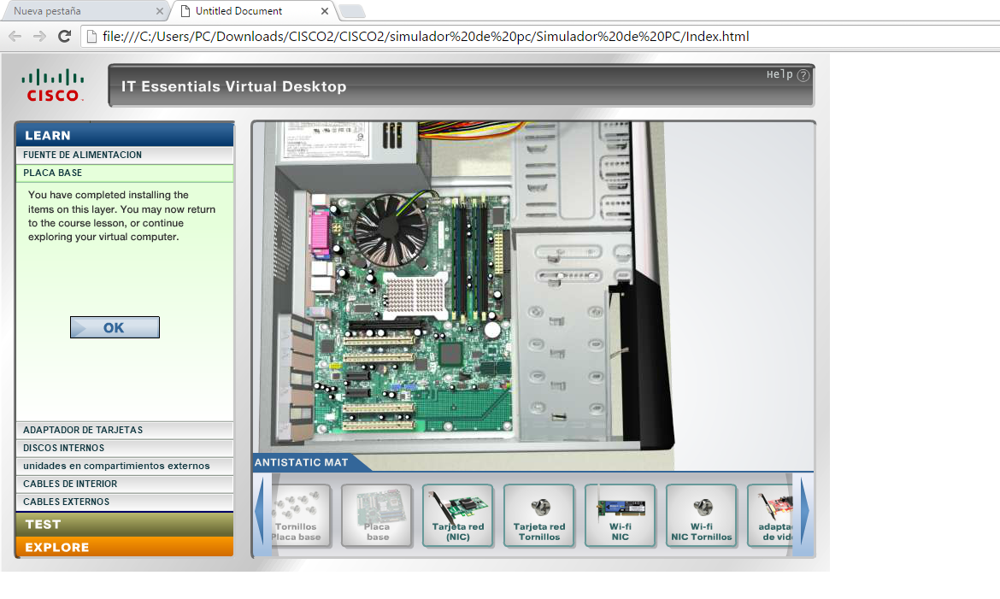
colocar el disipador de calor sobre el procesador, ajustar tornillos y concetar cable de alimentación al conector de placa base
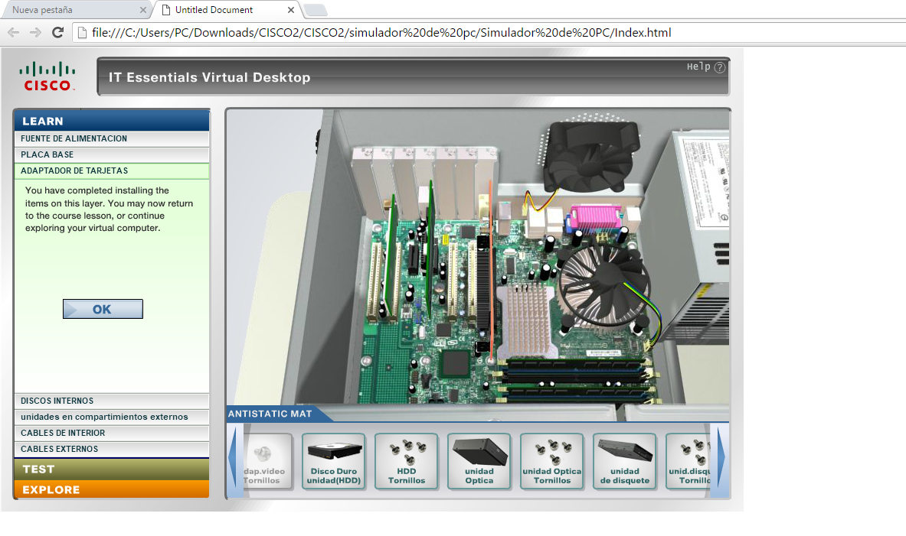
Insertar módulos RAM 1 y 2 en las ranuras correspondientes, presionar hacia abajo hasta que los pestillos queden firmes
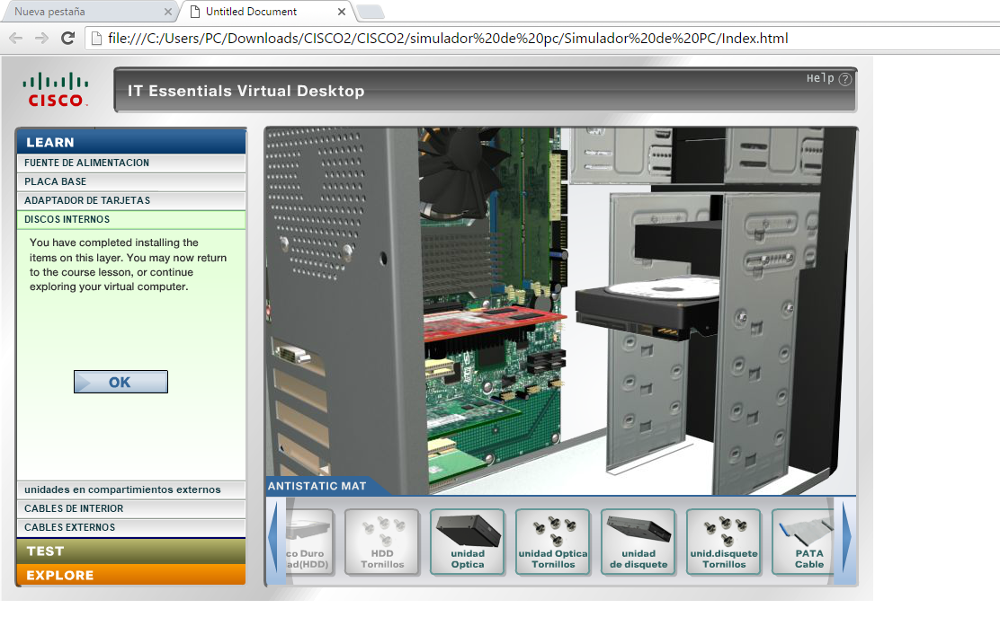
Introducir placa base dentro del gabinete, alinear los puertos traseros con la rejilla del chasis
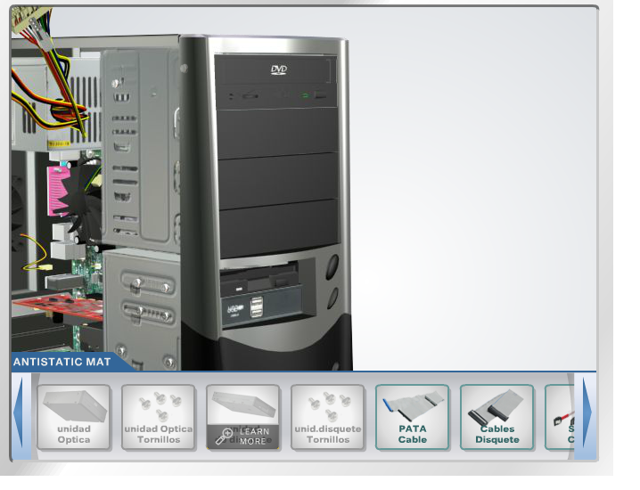
Fijar placa base de manera segura utilizando tornillos en los postes metálicos
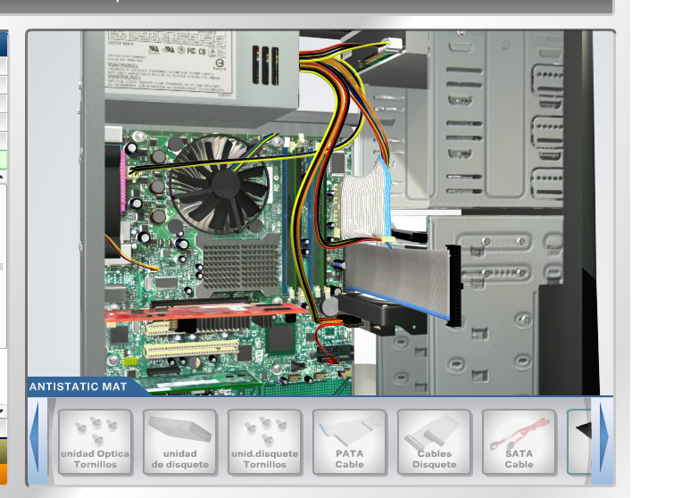
Insertar tarjeta red, tarjeta de red inalámbrica en ranura y asegurarlas con tornillos, insertar tarjeta gráfica y atornillar, asi mismo introducir disco duro, y asegurarlo colocando tornillos en laterales para fijación óptima
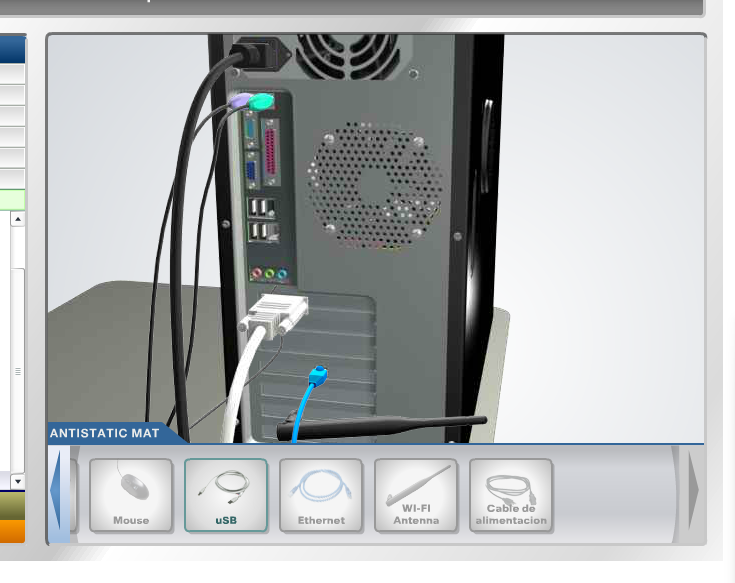
Conectar los cables principales de la fuente de poder a la placa base, los cables Molex, SATA, de la fuente a los discos duros, disqueteras y unidades ópticas
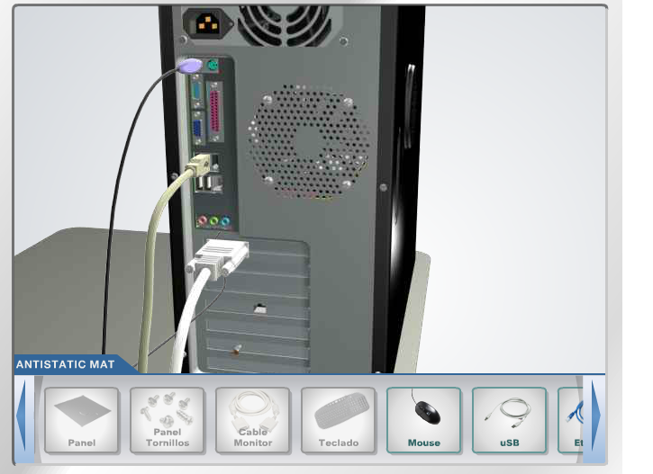
Colocar las tapas laterales metálicas para cerrar el ordenador, y asegurar con tornillos, así también conectar los cables de monitor, teclado, mouse y red ethernet, finalmente el cable de alimentación a la fuente de poder y tomacorriente